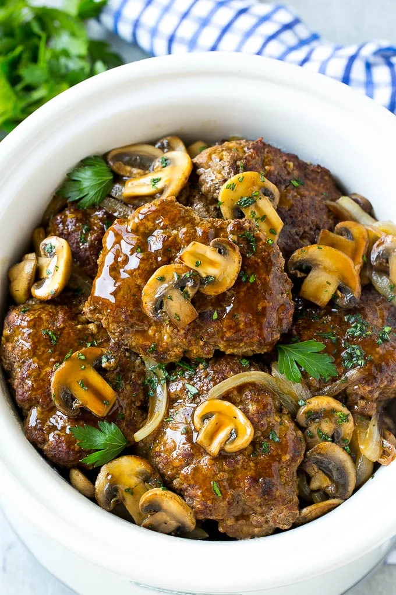

Salisbury Steak with Mushroom Recipe.
Home

Description.
Salisbury steak with mushroom gravy is a classic comfort food featuring
seasoned ground beef patties seared and then simmered in a rich, savory
brown sauce (Mushroom Gravy). This dish is often preferred for its deep
umami flavor and its ability to be made entirely in one skillet.
Why you'll love this recipe
-
This 40-minute Salisbury steak dinner is great for busy weeknights.
- Home cooks love the nostalgic appeal of these familiar flavors.
-
"This was the perfect cold-night meal!" says Allrecipes member Tracey
Ferrari Posner.
Ingredients
- 1 pound lean ground beef
- ⅓ cup dry bread crumbs
- ¼ cup chopped onions
- 1 egg, beaten
- 1 teaspoon salt
- ¼ teaspoon ground black pepper
- 2 cups beef broth
- 1 large onion, thinly sliced
- 1 cup sliced mushrooms
- 3 tablespoons cornstarch
- 3 tablespoons water